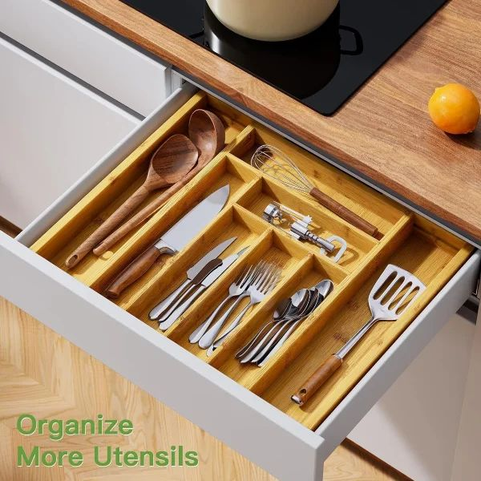
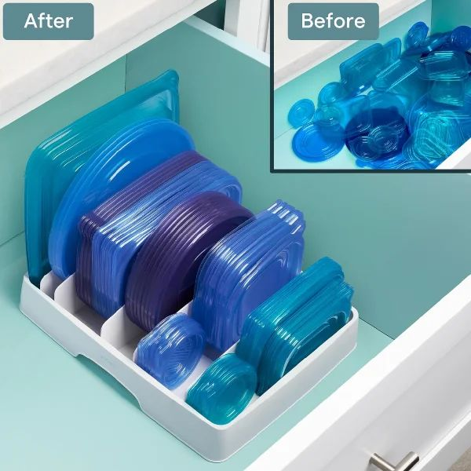
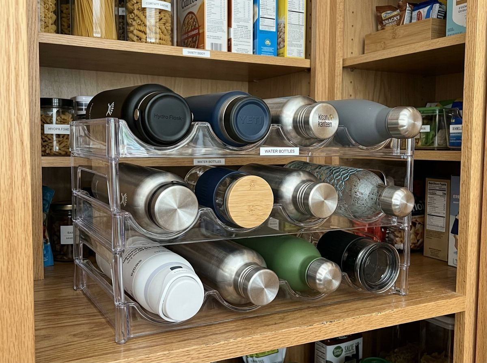
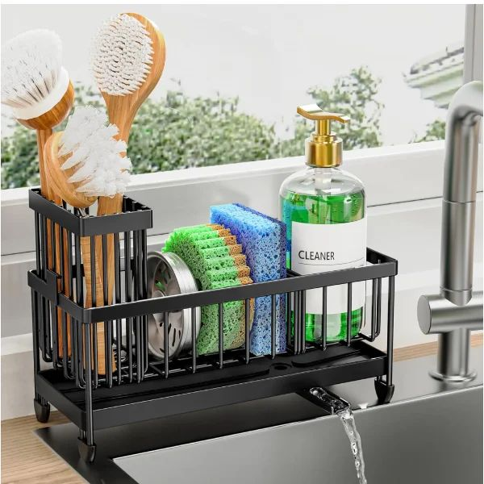
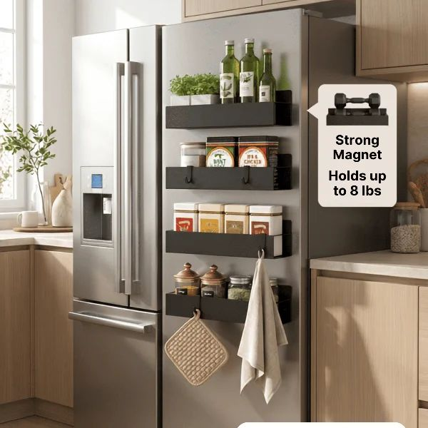
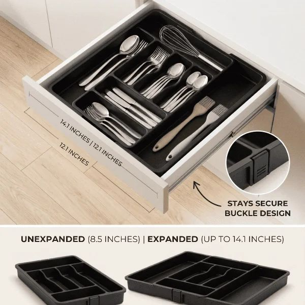

Most small kitchen organization problems trace back to one root cause: storage designed for quantity rather than access. Deep cabinets encourage stacking. Standard drawers create no category boundaries. Open counter space fills up without a system. The result is a kitchen where everything technically fits—but nothing is easy to find or use.
The organizing principle behind every item in this guide is the same: solve a specific access problem, not a general storage problem. A well-organized kitchen doesn't just hold more things—it makes the things you already have visible, reachable, and usable in seconds. That shift requires targeting specific frustration points: the deep spice cabinet, the lid drawer, the cluttered counter, the dark space under the sink.
Each of the 12 finds below addresses a different kitchen pain point. You don't need all twelve. Start with the two or three that describe a frustration you experience every single day—and notice how quickly fixing one specific problem changes the feel of the entire kitchen.
1. Pull-Out Spice Rack for Narrow Cabinets
Narrow upper cabinets next to the stove are notoriously difficult to organize. This dual-tier sliding spice rack slides out smoothly, bringing all 20+ spice jars directly into view without knocking anything over.

Pull-Out Spice Rack for Narrow Cabinets
Problem: Narrow upper cabinets next to the stove often turn into dark, unorganized gaps where spice jars get pushed to the back and forgotten.
Solution: This dual-tier sliding rack mounts inside slim 4" to 6" cabinets, utilizing smooth ball-bearing glides to pull all 20+ spice jars directly forward into full view.
- Navigates narrow 4" to 6" cabinet gaps effortlessly
- Smooth ball-bearing glide tracks pull out completely
- Holds up to 20 standard spice bottles securely
2. Expandable Bamboo Drawer Organizer
Standard plastic cutlery trays leave awkward gaps on the sides of your drawers. This expandable natural bamboo organizer adjusts from 6 to 8 slots to fit your exact drawer width.

Expandable Bamboo Silverware & Utensil Drawer Organizer
Problem: Standard plastic cutlery trays leave wasted gaps along drawer edges, causing spatulas, serving spoons, and whisks to jam the drawer when closing.
Solution: Designed with expandable side wings, this bamboo tray adjusts from 13" to 20" wide to create tailored compartments that keep utensils flat and organized.
- Expands from 13" to 20" to fit custom drawer widths
- Deep dividers prevent cutlery from mixing
- Water-resistant natural bamboo finish
3. Food Container Lid Organizer Tray
Stop digging through a tangled mess of plastic lids! Storing container lids vertically using this adjustable divider tray lets you spot matching lids in 1 second.

Adjustable Food Container Lid Organizer Tray
Problem: Loose Tupperware lids inevitably turn deep drawers into a chaotic pile where finding a matching lid takes several minutes.
Solution: Equipped with adjustable divider slots, this tray holds round and square food container lids upright in neat rows for instant 1-second retrieval.
- Includes 5 customizable dividers for different lid sizes
- Keeps up to 30 lids neatly aligned in one compact spot
- Fits standard kitchen cabinet shelves and deep drawers
4. Stackable Water Bottle Storage Rack
Reusable water bottles and travel mugs take up huge vertical space when stored upright. This stackable acrylic rack stores bottles horizontally so you can stack up to 9 bottles in a narrow cabinet.

Stackable Water Bottle Storage Organizer Rack
Problem: Storing tall reusable water bottles and travel tumblers upright on cabinet shelves leads to frequent tip-overs and wasted vertical space.
Solution: This clear acrylic rack cradles bottles horizontally in curved slots, allowing you to stack up to 9 bottles vertically without them rolling.
- Stores 3 bottles per tier, stackable up to 3 high (9 bottles total)
- Curved slots prevent bottles from rolling
- Clear shatter-resistant design fits cabinets and fridges
5. Stackable Refrigerator Organizer Bins
Stop losing produce and cheese packs in the back of your fridge. Clear acrylic stackable fridge bins turn open glass shelves into pull-out drawers for instant visibility.

Stackable Clear Refrigerator Organizer Bins
Problem: Open glass refrigerator shelves lack structure, causing produce bags, cheese packs, and condiments to get lost in the cold back corners.
Solution: These transparent BPA-free acrylic bins create clear pull-out drawers on fridge shelves, making contents instantly visible and easy to restock.
- BPA-free shatter-resistant transparent acrylic
- Stackable design doubles vertical shelf space
- Built-in handles for easy pulling and cleaning
6. Kitchen Countertop Organizers
Keep your kitchen sink area completely clutter-free with an auto-draining countertop caddy. It features dedicated compartments for dish soap dispensers, sponges, scrub brushes, and an angled drainage spout that channels excess water straight into your sink.

Stainless Steel Kitchen Countertop Sink Caddy Organizer
Problem: Wet sponges, dish soaps, and scrub brushes resting directly on countertop surfaces create standing water puddles and soapy residue near the faucet.
Solution: Built with an angled drainage spout, this compact sink caddy holds soap dispensers and sponges while channeling excess water straight into the sink.
- Auto-draining spout directs water directly into the sink
- Separate tall compartment holds scrub brushes upright
- Rustproof stainless steel frame with non-slip rubber feet
7. Heavy-Duty Pull Out Cabinet Drawer
Lower kitchen cabinets are notorious for becoming dark cluttered pits. Converting deep cabinets into pull-out slide drawers lets you grab heavy pots and mixing bowls effortlessly.

Heavy-Duty Sliding Pull Out Cabinet Organizer
Problem: Reaching for heavy pots, Dutch ovens, or mixing bowls in lower cabinets requires kneeling down and shuffling multiple items out of the way.
Solution: Featuring commercial-grade ball-bearing glides, this steel sliding rack attaches to cabinet bases and extends 100% forward for effortless access to heavy cookware.
- Holds up to 50 lbs of heavy pots, pans, and appliances
- Full-extension ball-bearing slides bring items forward
- Easy screw-in installation for cabinet bases
8. Expandable Pot Lid & Pan Organizer
Stacking frying pans and cookie sheets horizontally causes scratches and loud crashes. Storing pans vertically on an adjustable wire rack allows 1-second grab-and-go access.

Expandable Pot Lid & Baking Sheet Divider Rack
Problem: Stacking frying pans and baking sheets horizontally causes surface scratches, loud cabinet noise, and difficult access to bottom pans.
Solution: With adjustable metal wire dividers, this rack stores baking sheets, cutting boards, and pot lids vertically so you can grab any pan without disturbing others.
- Adjustable dividers fit thin baking sheets and thick frying pans
- Non-slip feet prevent rack from sliding inside cabinets
- Protects non-stick cookware coatings from scratches
9. Expandable Cabinet Shelf Riser
Standard cabinet shelves leave 8 to 10 inches of wasted vertical air. Expanding metal shelf risers create an extra middle level for coffee mugs, dinner plates, and glass jars.

Expandable Cabinet Shelf Riser
Problem: Standard cabinet shelves leave 8 to 10 inches of empty vertical space, forcing you to stack mugs or plates precariously high.
Solution: Adjusting from 12.6" to 20.5" in width, this sturdy metal shelf riser inserts a solid middle platform that doubles your usable shelf space.
- Expands from 12.6" to 20.5" width to fit custom cabinet spaces
- Solid flat steel platform prevents small mugs and jars from tipping
- Doubles usable vertical shelf capacity instantly
10. Spice Rack Organizer
Utilize unused vertical fridge space in renter-friendly apartments. These ultra-strong magnetic spice shelves attach directly to the side of your refrigerator without drilling or hardware.

Magnetic Refrigerator Spice Rack Organizer
Problem: Small rental kitchens often lack wall space or cabinet depth for spice storage, and renters cannot drill holes into walls or cabinets.
Solution: Backed by ultra-strong magnets that hold up to 8 lbs, these shelves stick securely to the side of any refrigerator with zero drilling or permanent installation.
- Ultra-strong magnetic backing holds up to 8 lbs securely
- 100% renter-friendly with zero drilling or adhesives required
- Includes hanging hooks for dish towels and oven mitts
11. Kitchen Drawer Organizer
Keep your daily silverware, knives, spatulas, and whisks perfectly sorted. This expandable black utensil tray features a secure side buckle design that adjusts from 8.5" to 14.1" wide.

Expandable Kitchen Drawer Organizer Tray
Problem: Cutlery and kitchen tools shift around inside unorganized drawers, making it difficult to separate dinner forks from serving tools.
Solution: Featuring a secure side locking buckle, this expandable black tray adjusts from 8.5" to 14.1" wide to keep utensils separated and firmly locked in place.
- Expands from 8.5" to 14.1" width to fit various drawer sizes
- Secure side buckle design keeps expanded wings firmly locked
- Deep multi-compartment slots sort cutlery, spatulas, and kitchen tools
12. 2-Tier Under Sink Sliding Organizer
Bypass awkward sink P-traps and garbage disposals with a 2-tier under-sink caddy featuring a smooth sliding bottom drawer for cleaning sprays and sponges.

2-Tier Sliding Under-Sink Storage Organizer
Problem: Under-sink cabinets are notoriously tricky due to obstruction from plumbing pipes, garbage disposals, and tall spray bottles.
Solution: Designed with a narrow top tray and a smooth sliding bottom drawer, this 2-tier caddy fits around plumbing lines to organize cleaning supplies effortlessly.
- Navigates around plumbing pipes and disposal units
- Bottom drawer pulls out smoothly for easy access
- Waterproof corrosion-resistant frame